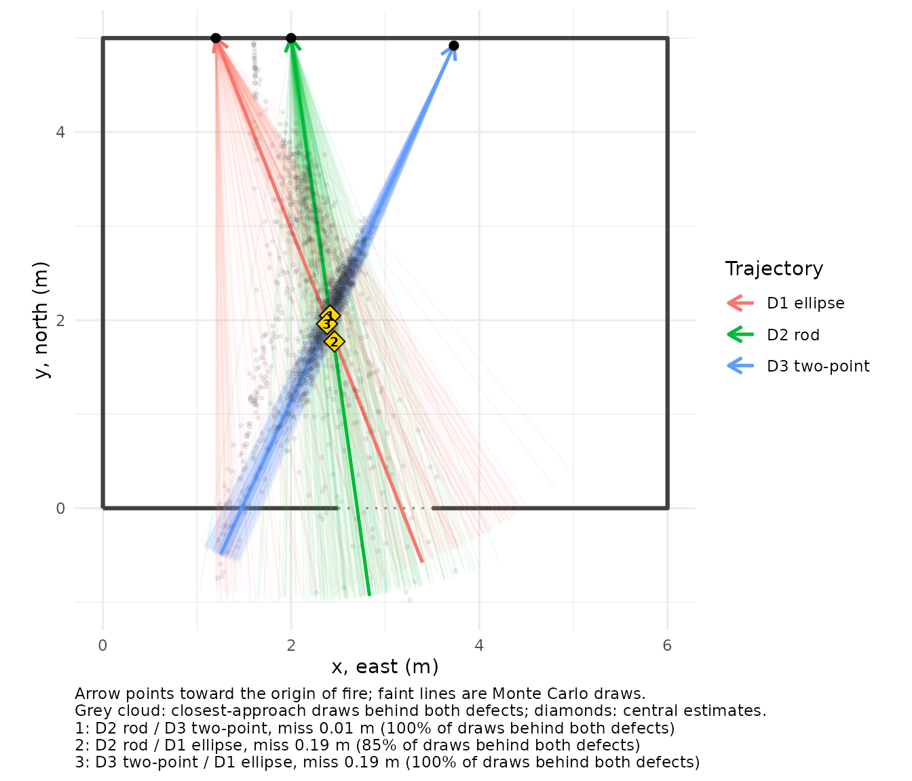
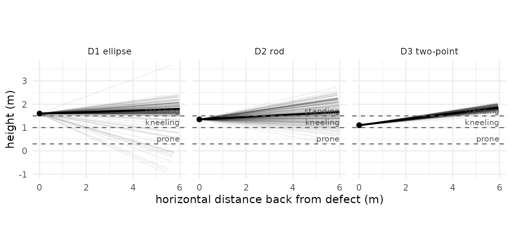
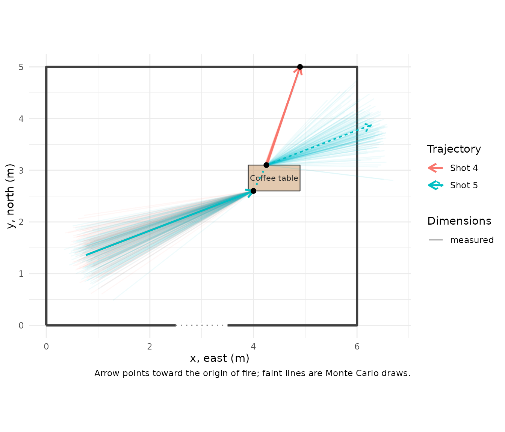
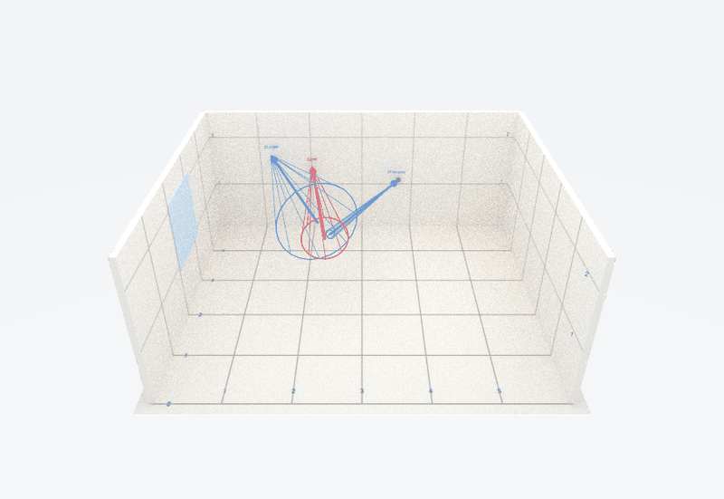

Shooting reconstruction with explicit uncertainty
Source:vignettes/shooting-reconstruction.Rmd
shooting-reconstruction.RmdShooting incident reconstruction answers a narrow question with geometry: given the defects a bullet left, where could it have come from? forensicR follows the standard field workflow (Haag & Haag, Shooting Incident Reconstruction; Hueske, Practical Analysis and Reconstruction of Shooting Incidents; OSAC 2025-N-0003 terminology) and adds the one thing paper cannot: every result carries the uncertainty of the measurements it came from.
Throughout, the frame is x east, y north, z up; azimuths are degrees clockwise from north; a trajectory’s direction is the direction of flight, and its anchor is the defect where the bullet struck.
1. Impact angle from a defect
A bullet striking a flat, non-yielding surface leaves an elliptical defect. The angle of impact relative to the surface is approximately asin(width / length). Measure both axes and give the measurement error:
impact_angle(width = c(9.1, 6.0), length = c(9.3, 12.5), se = 0.5)
#> # A tibble: 2 × 4
#> angle_deg lower upper level
#> <dbl> <dbl> <dbl> <dbl>
#> 1 78.1 56.7 86.0 0.95
#> 2 28.7 23.3 34.7 0.95Two things to notice. Near 90 degrees (a nearly round defect) the interval is wide: the ellipse simply does not carry much information there. And the method is only valid on surfaces that do not deform: drywall, wood, sheet metal. Not glass, not fabric.
2. Three ways to establish a trajectory
Rod or laser angles at the defect
The most common method. Record the vertical angle (angle finder) and the horizontal angle (protractor or total station), both as the direction of flight. Five degrees is a commonly cited uncertainty for rods; use what your validation supports.
t_rod <- trajectory_from_angles(anchor = c(2.0, 5.0, 1.35),
azimuth_deg = 352, vertical_deg = -3,
se_azimuth = 5, se_vertical = 5, id = "D2 rod")
t_rod
#>
#> ── Trajectory D2 rod (angles at defect)
#> Anchor (x, y, z): 2, 5, 1.35
#> Flight azimuth: 352° ± 5° (clockwise from north)
#> Vertical angle: -3° ± 5° (downward flight)Two points on the path
Entry and exit of a wall, a defect and a probe tip, two defects in line. Positional uncertainty is propagated to the angles. The trajectory is anchored at the second point (the impact); the first is kept and becomes the joint of a segmented path (section 6).
t_2pt <- trajectory_2pt(p1 = c(3.4, 4.2, 1.20), p2 = c(3.73, 4.92, 1.10),
se_position = 0.01, id = "D3 two-point")
t_2pt
#>
#> ── Trajectory D3 two-point (two points)
#> Anchor (x, y, z): 3.73, 4.92, 1.1
#> Flight azimuth: 24.6° ± 1° (clockwise from north)
#> Vertical angle: -7.2° ± 1° (downward flight)A single defect’s ellipse plus directionality
When no rod can be placed. Needs the ellipse, the orientation of its major axis on the wall (0 = vertical, 90 = horizontal, clockwise as seen from the shooter’s side) and which end the bullet came from (lead-in mark, pinch point). The wall’s facing direction fixes the frame.
t_ell <- trajectory_from_defect(anchor = c(1.2, 5.0, 1.60), width = 9.3, length = 10.0,
major_axis_deg = 85, wall_azimuth_deg = 180,
came_from = "right", se = 0.5, se_orientation = 5,
id = "D1 ellipse")
t_ell
#>
#> ── Trajectory D1 ellipse (defect ellipse)
#> Anchor (x, y, z): 1.2, 5, 1.6
#> Flight azimuth: 338.5° ± 10.9° (clockwise from north)
#> Vertical angle: -1.8° ± 7° (downward flight)
trajs <- list(t_rod, t_2pt, t_ell)
trajectory_table(trajs)[, c("id", "method", "azimuth_deg", "se_azimuth", "vertical_deg", "se_vertical")]
#> # A tibble: 3 × 6
#> id method azimuth_deg se_azimuth vertical_deg se_vertical
#> <chr> <chr> <dbl> <dbl> <dbl> <dbl>
#> 1 D2 rod angles at defect 352 5 -3 5
#> 2 D3 two-point two points 24.6 1.01 -7.20 1.01
#> 3 D1 ellipse defect ellipse 339. 10.9 -1.84 7.05Compare the uncertainties: the two-point method with centimetre positions is ten times tighter than the rod; the ellipse of a nearly round defect is the loosest. The plots below show the same thing as fans.
3. Seeing the cone, not the line
walls <- rbind(room_rect(0, 0, 6, 5), opening(2.5, 0, 3.5, 0, "door"))
plot_trajectories(trajs, view = "plan", walls = walls, back = 6, convergence = TRUE)
plot_trajectories(trajs, view = "elevation", back = 6)
The dashed lines in the elevation view are assumed muzzle heights. Where the fan crosses them is where a shooter of that posture could have been.
4. Where was the shooter?
origin_zone() intersects the back-projected line with each assumed height and reports the horizontal distance and position, with Monte Carlo intervals. max_distance bounds the search to the scene; furniture excludes positions inside objects.
origin_zone(t_rod, heights = c(standing = 1.5, kneeling = 1.0, prone = 0.3),
max_distance = 12)
#> # A tibble: 3 × 9
#> position height horizontal_distance hd_lower hd_upper x y p_reachable
#> <chr> <dbl> <dbl> <dbl> <dbl> <dbl> <dbl> <dbl>
#> 1 standing 1.5 1.68 0.609 9.22 2.22 3.34 0.670
#> 2 kneeling 1 5.34 1.93 11.5 2.69 -0.273 0.179
#> 3 prone 0.3 9.18 5.02 11.9 3.19 -4.06 0.0556
#> # ℹ 1 more variable: p_in_furniture <dbl>p_reachable is the fraction of draws that reach that height within the distance limit. A low value means the height is poorly supported by the trajectory, and the interval is conditional on the draws that do reach it. Report both numbers.
5. Several shots: do they converge?
If two shots came from one position, their back-projected lines should pass close to each other behind both defects. intersect_trajectories() gives the closest approach, the miss distance and whether it lies behind both defects, all with Monte Carlo spread.
ix <- intersect_trajectories(t_rod, t_2pt)
ix$point
#> [1] 2.414256 2.048407 1.502531
ix$miss_distance
#> [1] 0.007417332
ix$behind_both
#> [1] TRUE
ix$summary
#> # A tibble: 4 × 4
#> quantity lower median upper
#> <chr> <dbl> <dbl> <dbl>
#> 1 x 1.90 2.43 2.73
#> 2 y 0.947 2.13 2.79
#> 3 z 1.24 1.50 1.80
#> 4 miss_distance 0.00762 0.184 0.600In this example the three defects were simulated from one shooter standing at (2.4, 2.0, 1.5) and the reconstruction recovers that point to a few centimetres. A small miss distance is consistent with, but does not prove, a single firing position.
6. Objects on the path
With the scene’s furniture, trajectory_obstructions() reports which objects each back-projected line passes through and between which distances. A hit means the object is an intermediate target (look for a defect in it) or the path must be reconsidered.
furn <- rbind(along_wall(walls, "north", from = 3.4, length = 2.1, depth = 0.9, id = "Sofa", type = "sofa"),
furniture("Floor lamp", "box", x = 1.95, y = 3.85, width = 0.3, depth = 0.3, height = 1.7))
trajectory_obstructions(trajs, furn, back = 6)
#> # A tibble: 1 × 5
#> trajectory object from to top_height
#> <chr> <chr> <dbl> <dbl> <dbl>
#> 1 D2 rod Floor lamp 0.86 1.16 1.77. Segmented paths through intermediate targets
A bullet that passes through a table, a door or a wardrobe follows two or more straight segments. Each segment is measured on its own; the path orders them from the shooter’s side to the terminal defect and records the joints (exit points).
seg_in <- trajectory_from_angles(anchor = c(4.0, 2.6, 0.5), azimuth_deg = 69, vertical_deg = -30,
id = "D4 into table")
seg_out <- trajectory_2pt(p1 = c(4.25, 3.1, 0.45), p2 = c(4.9, 5.0, 0.2), se_position = 0.01,
id = "D4 to wall")
shot4 <- trajectory_path(seg_in, seg_out, id = "Shot 4")
shot4
#>
#> ── Trajectory path Shot 4: 2 segments
#> 1. D4 into table (angles at defect): azimuth 69°, vertical -30°
#> 2. D4 to wall (two points): azimuth 18.9°, vertical -7.1°
#> Joint 1 (first point of next segment): deflection 52.2° [43.6, 60.8]
path_deflections(shot4)[, c("joint", "deflection_deg", "lower", "upper", "miss_in", "miss_out", "joint_source")]
#> # A tibble: 1 × 7
#> joint deflection_deg lower upper miss_in miss_out joint_source
#> <int> <dbl> <dbl> <dbl> <dbl> <dbl> <chr>
#> 1 1 52.2 43.4 60.5 0.411 0.0000000298 first point of next seg…The deflection is the angle between the measured segments, with its interval. miss_in and miss_out are the distances from the joint to each segment’s line: if either is larger than your measurement uncertainty allows, the documented segments do not actually meet at that joint.
Deflection is never predicted. How much a bullet deviates when it passes through something depends on the bullet, its velocity, the material and the angle, and cannot be computed reliably from the scene. When the path after an object was not documented, assumed_segment() continues the incoming direction with a cone whose width you state. It is flagged ASSUMED in every table and plot, drawn dashed, and refused by origin_zone().
shot5 <- trajectory_path(seg_in,
assumed_segment(seg_in, joint = c(4.25, 3.1, 0.45), length = 2.5,
se_deflection = 10, id = "after table (assumed)"),
id = "Shot 5")
trajectory_table(shot5)[, c("id", "path", "segment", "assumed", "method")]
#> # A tibble: 2 × 5
#> id path segment assumed method
#> <chr> <chr> <int> <lgl> <chr>
#> 1 D4 into table Shot 5 1 FALSE angles at defect
#> 2 after table (assumed) Shot 5 2 TRUE assumed deflection
plot_trajectories(list(shot4, shot5), view = "plan", walls = walls,
furniture = furniture("Coffee table", "table", x = 3.9, y = 2.6, width = 1.0, depth = 0.5),
back = 4)
For origin analysis and convergence, only the first segment of a path (the one on the shooter’s side) is used.
8. In three dimensions

The three trajectories of section 2 rendered to scale: rods with arrowheads at the defects, wireframe cones for the angular uncertainty, floor grid with numbered axes.
render_scene_3d(walls, NULL, trajs, file = "shooting.png", view = "dollhouse")9. What to write in the report
- The method for each trajectory and the uncertainty you assigned to it, with the reason (validation study, manufacturer’s specification, rule of thumb).
- Origin distances as intervals at stated muzzle heights, together with
p_reachable, and the assumptions behind the heights. - Convergence as consistent with, never as proof of, a single position.
- Any assumed segment as an assumption, separately from the evidence.
The report template does all of this by default; see vignette("reports-and-3d").